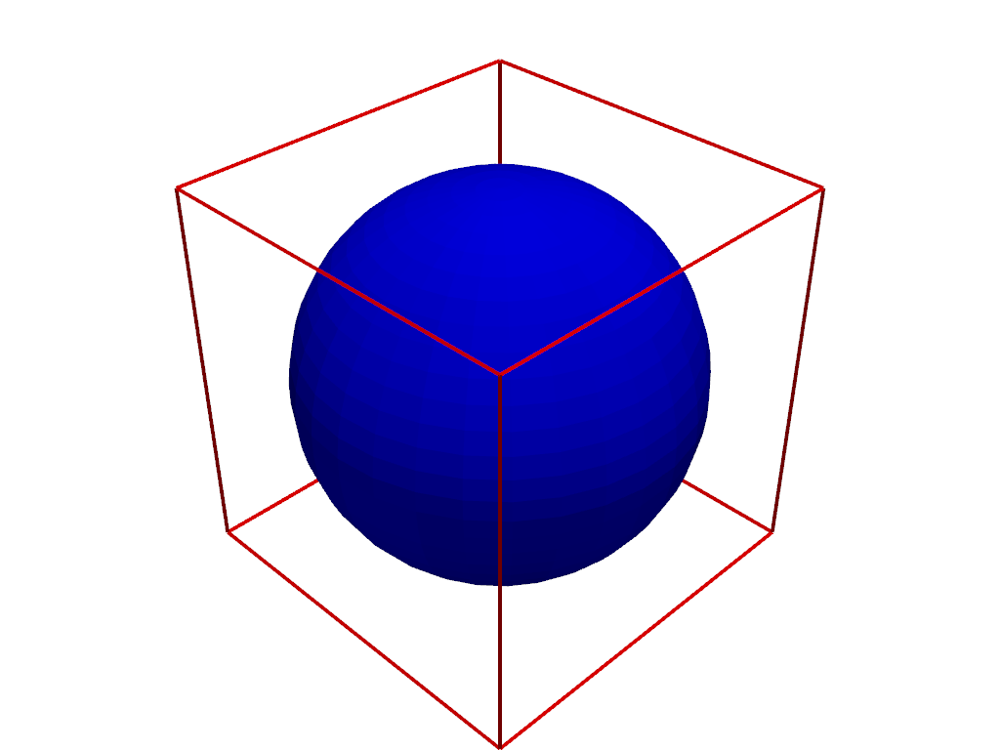

pyvista.Plotter#
- class Plotter(*args, **kwargs)[ソース]#
vtkメッシュまたは無感覚な配列を表示するためのオブジェクトのプロット．
- パラメータ
- off_screenbool,
optional Trueの場合，画面をレンダリングしません．自動スクリーンショットに便利です．- notebookbool,
optional Trueの場合，作成されたプロットはjupyterノートブック内に配置されます．jupyterコンソールがアクティブであると仮定します．off_screenを自動的に有効にします．- shapepython:list か python:tuple, optional
メインウィンドウ内のサブレンダリングウィンドウの数．
shape=(2, 1)で2 acrossを，shape=(2, 2)で2 x 2 グリッドを指定します．デフォルトでは，レンダウィンドウは1つだけです．文字列記述子をshapeとして受け入れることもできます．例:shape="3|1"とは，左側に3区画，右側に1区画という意味です．shape="4/2"は，上に4プロット，下に2プロットを意味します．
- borderbool,
optional 各レンダリングウィンドウの周囲に境界を描きます．デフォルトは
Falseです．- border_color
color_like,optional 文字列，RGBリスト，または16進カラー文字列．例:
color='white'color='w'color=[1.0, 1.0, 1.0]color='#FFFFFF'
- window_size
list,optional ピクセル単位のウィンドウサイズ．デフォルトは
[1024, 768]です．ただし，関連するテーマのwindow_sizeプロパティで別の値が設定されている場合を除きます．- multi_samples
int,optional エイリアシングを軽減するために使用されるマルチサンプルの数．4は良いデフォルトです．8はパフォーマンスに影響を与える可能性がありますが，より良い結果が得られます．
- line_smoothingbool,
optional Trueの場合，ラインスムージングを有効にします．
- polygon_smoothingbool,
optional Trueの場合，ポリゴンのスムージングを有効にします．- lighting
str,optional プロッタに設定する照明．使用可能なオプション:
'light_kit': 5個のライトで構成されるvtk Light Kitです．'three lights': 3つのライトを使った照明．'none': インスタンス化時に光源がありません．
デフォルトは
'light_kit'(正確には，Light Kitのように動作する5つの独立したライト)です．- theme
pyvista.themes.DefaultTheme,optional Plot固有のテーマ．
- off_screenbool,
例
>>> import pyvista >>> from pyvista import examples >>> mesh = examples.load_hexbeam() >>> another_mesh = examples.load_uniform() >>> plotter = pyvista.Plotter() >>> actor = plotter.add_mesh(mesh, color='red') >>> actor = plotter.add_mesh(another_mesh, color='blue') >>> plotter.show()

メソッド
Plotter.add_actor(uinput[, reset_camera, ...])レンダリングウィンドウにアクターを追加します．
Plotter.add_arrows(cent, direction[, mag])プロッタに矢印を追加します．
Plotter.add_axes([interactive, line_width, ...])左下隅にインタラクティブ軸ウィジェットを追加します．
Plotter.add_axes_at_origin([x_color, ...])原点に軸アクターを追加します．
Plotter.add_background_image(image_path[, ...])背景イメージをプロットに追加します．
Plotter.add_bounding_box([color, ...])プロットの境界にラベルなしのチェックボックスを追加します．
Plotter.add_box_widget(callback[, bounds, ...])ボックスウィジェットをシーンに追加します．
カメラの向きを表すウィジェットをアクティブレンダラーに追加します．
Plotter.add_chart(chart, *charts)このレンダラーにチャートを追加します．
Plotter.add_checkbox_button_widget(callback)チェックボックスボタンウィジェットをシーンに追加します．
Plotter.add_cursor([bounds, focal_point, color])PyVistaまたはVTKデータセットのシルエットをカーソルに追加します．
Plotter.add_floor([face, i_resolution, ...])床メッシュを表示します．
Plotter.add_key_event(key, callback)指定されたキーが押されたときにコールバックに関数を追加します．
Plotter.add_legend([labels, bcolor, border, ...])凡例をレンダリングウィンドウに追加します．
Plotter.add_light(light[, only_active])シーンにライトを追加します．
Plotter.add_line_widget(callback[, bounds, ...])シーンに線ウィジェットを追加します．
Plotter.add_lines(lines[, color, width, ...])プロッティングオブジェクトに線分を追加します．
Plotter.add_mesh(mesh[, color, style, ...])PyVistaがシーンにラップできるPyVista/VTKメッシュまたはデータセットを追加します．
Plotter.add_mesh_clip_box(mesh[, invert, ...])ボックスウィジェットを使用してメッシュをクリップします．
Plotter.add_mesh_clip_plane(mesh[, normal, ...])プレインウィジェットを使用してメッシュをクリップします．
Plotter.add_mesh_isovalue(mesh[, scalars, ...])スライダを使用してメッシュの輪郭を作成します．
Plotter.add_mesh_slice(mesh[, normal, ...])プレインウィジェットを使用してメッシュをスライスします．
Plotter.add_mesh_slice_orthogonal(mesh[, ...])3つのインタラクティブな平面でメッシュをスライスします．
Plotter.add_mesh_slice_spline(mesh[, ...])スプラインウィジェットを使用してメッシュをスライスします．
Plotter.add_mesh_threshold(mesh[, scalars, ...])スライダを使用してメッシュに閾値を適用します．
Plotter.add_orientation_widget(actor[, ...])方向マーカーウィジェットで指定したアクターを使用します．
Plotter.add_plane_widget(callback[, normal, ...])シーンに平面ウィジェットを追加します．
Plotter.add_point_labels(points, labels[, ...])各ポイントに割り当てられたリストラベルから1つのラベルを持つポイントアクターを作成します．
Plotter.add_point_scalar_labels(points, labels)データセットのポイントに，スカラー値のラベルを付けます．
Plotter.add_points(points, **kwargs)メッシュにポイントを追加します．
Plotter.add_ruler(pointa, pointb[, ...])ルーラーを追加します．
Plotter.add_scalar_bar([title, mapper, ...])最後の入力メッシュによって設定された範囲を使用してスカラバーを作成します．
Plotter.add_silhouette(mesh[, params])PyVistaまたはVTKデータセットのシルエットをシーンに追加します．
Plotter.add_slider_widget(callback, rng[, ...])スライダバーウィジェットを追加します．
Plotter.add_sphere_widget(callback[, ...])1つまたは複数の球ウィジェットをシーンに追加します．
Plotter.add_spline_widget(callback[, ...])スプラインウィジェットを作成し，シーンに追加します．
Plotter.add_text(text[, position, ...])既定では，印刷オブジェクトの左上コーナーに文字を追加します．
Plotter.add_text_slider_widget(callback, data)テキストスライダバーウィジェットを追加します．
Plotter.add_title(title[, font_size, color, ...])プロットの上部中央にテキストを追加します．
Plotter.add_volume(volume[, scalars, clim, ...])ボリュームを追加し，デフォルトではスマートマッパーを使用してレンダーします．
すべてのアクターとプロパティを削除して，プロットをクリアします．
ボックスウィジェットをすべて削除します．
ボタンウィジェットをすべて削除します．
カメラウィジェットをすべて削除にします．
キーに関連付けられているコールバックを削除します．
ラインウィジェットをすべて削除します．
プレーンウィジェットをすべて削除します．
スライダーウィジェットをすべて削除します．
球ウィジェットをすべて削除します．
スプラインウィジェットをすべて削除します．
Plotter.close([render])レンダーウィンドウを閉じます．
メモリのプロッタをクリーニングします．
このレンダラのカメラをインタラクティブにできないようにします．
enable_lightkitを使用してください．このメソッドは非推奨です．アンチエイリアスを無効にします．
深度ピーリングを無効にします．
Eye-Dome Lighting (EDL) を無効にします．
隠線除去を無効にします．
パース投影を使用するようにカメラをリセットします．
アクティブなピッキングを無効化します．
影を無効にします．
ステレオレンダリングを無効にします．
このレンダラのカメラをインタラクティブにします．
Plotter.enable_3_lights([only_active])3ライトイルミネーションを有効にします．
アンチエイリアスをFXAAを使って有効にします．
Plotter.enable_cell_picking([mesh, ...])セルの選択を有効にします．
Plotter.enable_depth_peeling([...])デプスのピーリングを有効にすると，半透明のジオメトリのレンダリングが向上します．
Eye-Dome Lighting (EDL) を有効にします．
Plotter.enable_fly_to_right_click([callback])右クリック位置をトラックするようにカメラを設定します．
Plotter.enable_geodesic_picking([callback, ...])測地パスでの選択を有効にします．
隠線除去を有効にします．
Plotter.enable_horizon_picking([callback, ...])範囲選択を使用可能にします．
インタラクティブスタイルをImageに設定します．
インタラクティブスタイルをジョイスティックアクターに設定します．
インタラクティブスタイルをジョイスティックカメラに設定します．
Plotter.enable_lightkit([only_active])デフォルトのライトキットライティングを有効にします．
Plotter.enable_mesh_picking([callback, ...])メッシュのピッキングを可能にします．
平行投影を有効にします．
Plotter.enable_path_picking([callback, ...])パスの選択を有効にします．
Plotter.enable_point_picking([callback, ...])ポイントでの選択を有効にします．
インタラクティブスタイルをラバーバンド2Dに設定します．
インタラクティブスタイルをラバーバンド選択に設定します．
影を有効にします．
ステレオレンダリングを有効にします．
Plotter.enable_surface_picking([callback, ...])メッシュの表面上の点をピッキングできるようにする．
Plotter.enable_terrain_style([...])対話型スタイルを地形に設定します．
インタラクティブスタイルをトラックボールアクターに設定します．
インタラクティブスタイルをトラックボールカメラに設定します．
インタラクティブスタイルをラバーバンドズームに設定します．
Plotter.export_gltf(filename[, inline_data, ...])現在のレンダリングシーンをglTFファイルとしてエクスポートします．
Plotter.export_html(filename[, backend])このプロッタをインタラクティブなシーンとしてHTMLファイルに書き出すことができます．
Plotter.export_obj(filename)シーンをOBJフォーマットにエクスポートします．
Plotter.export_vrml(filename)現在のレンダリングシーンをVRMLファイルとしてエクスポートします．
Plotter.export_vtkjs(filename[, compress_arrays])現在のレンダリングシーンをVTKjsシーンとして書き出します．
Plotter.fly_to(point)カレントカメラの焦点をある位置に移動します．
Plotter.fly_to_mouse_position([focus])最後に保存されたマウス位置にフォーカスします．
Plotter.generate_orbital_path([factor, ...])データシーンの周囲に軌道パスを生成します．
Plotter.get_default_cam_pos([negative])デフォルトの焦点とビューアップを取得します．
Plotter.get_image_depth([fill_value, ...])現在のレンダーウィンドウを表すDepth画像を取得します．
ピックの位置やエリアを取得します．
軸方向ウィジェットを非表示にします．
全てのレンダラーで軸方向ウィジェットを非表示にします．
Plotter.import_gltf(filename[, set_camera])glTFファイルをプロッターに取り込みます．
Plotter.import_vrml(filename)VRML ファイルをプロッターに取り込みます．
すべてのアクターのポイントサイズと線幅の増分．
カメラを既定のアイソメビューにリセットします．
現在のインタラクティブレンダリングウィンドウをアイソメビューに設定します．
Plotter.key_press_event(obj, event)キー押下イベントを聞きます．
Plotter.left_button_down(obj, event_type)左ボタンダウンクリックのイベントを登録します．
Plotter.link_views([views])ビューのカメラをリンクします．
Plotter.open_gif(filename[, loop, fps, ...])gifファイルを開きます．
Plotter.open_movie(filename[, framerate, ...])ffmpegライタへの接続を確立します．
Plotter.orbit_on_path([path, focus, step, ...])フォーカスポイントに焦点を合わせて，指定されたパス上をオービットします．
3 Dプロット内の対応するクリック位置を取得します．
3 Dプロット内の対応するマウス位置を取得します．
Plotter.remove_actor(actor[, reset_camera, ...])レンダリングからアクターを削除します．
Plotter.remove_all_lights([only_active])シーンからすべてのライトを削除します．
現在のレンダラーの背景画像を削除します．
Plotter.remove_bounding_box([render])バウンディングボックスを削除します．
境界軸を削除します．
Plotter.remove_chart(chart_or_index)このレンダラーからチャートを削除します．
Plotter.remove_floors([clear_kwargs, render])すべてのフロアアクターを削除します．
Plotter.remove_legend([render])凡例アクターを削除します．
Plotter.remove_scalar_bar([title, render])スカラーバーを削除します．
メインウィンドウをレンダリングします．
Plotter.reset_camera([render, bounds])アクティブなレンダウィンドウのカメラをリセットします．
カメラのクリッピングプレーンをリセットします．
すべてのキー押下イベントをデフォルトにリセットします．
Plotter.save_graphic(filename[, title, ...])レンダリングウィンドウのスクリーンショットをグラフィックファイルとして保存します．
Plotter.screenshot([filename, ...])現在のカメラ位置でスクリーンショットを撮ります．
Plotter.set_background(color[, top, ...])背景色を設定します．
Plotter.set_environment_texture(texture[, ...])イメージベースのライティングに使用する環境テクスチャを設定します．
Plotter.set_focus(point)ポイントにフォーカスを設定します．
Plotter.set_position(point[, reset])カメラ位置をポイントに設定します．
Plotter.set_scale([xscale, yscale, zscale, ...])シーン内のすべてのデータセットをスケールします．
Plotter.set_viewup(vector)カメラのビューアップベクトルを設定します．
Plotter.show([title, window_size, ...])プロットウィンドウを表示します．
軸方向ウィジェットを表示します．
すべてのレンダラで軸方向ウィジェットを表示します．
Plotter.show_bounds([mesh, bounds, ...])境界軸を追加します．
Plotter.show_grid(**kwargs)目盛線と軸ラベルを表示します．
Plotter.store_click_position(*args)クリック位置をビューポート座標に保存します．
Plotter.store_mouse_position(*args)マウスの位置を保存します．
Plotter.subplot(index_row[, index_column])アクティブなサブプロットを設定します．
この作図シーンをpythreejsのウィジェットに変換します．
Plotter.track_click_position([callback, ...])クリック位置を記録します．
マウスの位置を追跡します．
Plotter.unlink_views([views])ビューのカメラをリンクを削除します．
Plotter.untrack_click_position([side])クリック位置のトラッキングを停止します．
マウス位置のトラッキングを停止します．
Plotter.update([stime, force_redraw])ウィンドウを更新し，再描画し，メッセージクエリを処理します．
レンダーウィンドウの境界軸を更新します．
Plotter.update_coordinates(points[, mesh, ...])プロッタのオブジェクトの点を更新します．
Plotter.update_scalar_bar_range(clim[, name])アクティブなスカラーバーまたは名前付きスカラーバーの値の範囲を更新します．
Plotter.update_scalars(scalars[, mesh, render])プロッタのオブジェクトのスカラー値を更新します．
Plotter.view_isometric([negative])カメラを既定のアイソメビューにリセットします．
Plotter.view_vector(vector[, viewup])指定したベクトルの方向にカメラを向けます．
Plotter.view_xy([negative])XY平面を表示します．
Plotter.view_xz([negative])XZ平面を表示します．
Plotter.view_yx([negative])YX平面を表示します．
Plotter.view_yz([negative])YZ平面を表示します．
Plotter.view_zx([negative])ZX平面を表示します．
Plotter.view_zy([negative])ZY平面を表示します．
Plotter.where_is(name)指定されたアクターのサブプロット座標を取得します．
動画ファイルに1つのフレームを書き込みます．
アトリビュート
アクティブなレンダーウィンドウのバックグラウンドカラーを取得します．
アクティブなレンダラーの境界を取得します．
アクティブなレンダラーのアクティブカメラを取得します．
アクティブなレンダウィンドウのカメラ位置を取得します．
アクティブなレンダラーのカメラが設定されている場合に取得します．
アクティブなレンダラーの中心を取得します．
現在のレンダーウィンドウのイメージ配列を取得します．
現在のレンダーウィンドウを表すDepth画像を取得します．
凡例アクター．
シーンのバウンディングボックスの対角線の長さを取得します．
アクティブなレンダーウィンドウの平行投影状態を取得します．
アクティブなレンダーウィンドウの平行スケールを取得します．
選択可能なアクターを返す，または設定します．
ピックしたメッシュを返します．
ピックした点を返します．
アクティブなレンダラーを取得します．
最初のスカラーバー．
スカラバー．
アクティブなレンダラーのスケーリングを取得します．
プロッタの形状．
最後にレンダリングされたフレームをクローズ時に保存します．
このプロッタで使用するテーマを返すか設定します．
レンダリングウィンドウのサイズを
(width, height)で返します．